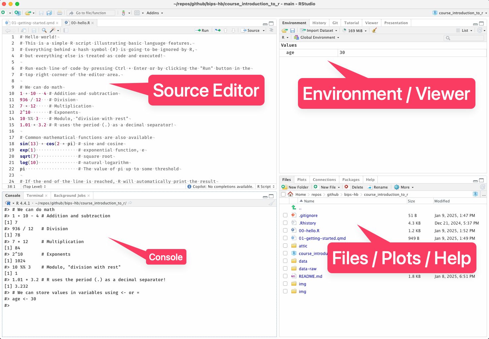

# Hello
10 * 5.3[1] 53-5 + 10[1] 59^2[1] 812 + 5 / 4[1] 3.25(2 + 5) / 4[1] 1.75This is a Quarto document. It contains regular text, code, and output when viewed in RStudio. It can also be converted into an HTML (or PDF) document, where code and output are shown together as well.
This text is formatted using Markdown, a lightweight syntax that uses asterisks (*), underscores (_), hyphens (-), and parentheses / brackets (() and []) to format text. We can also embed images:

We can also write R code in a code block and execute it using either Ctrl + R like in a regular script or using the green button on the top right of the cell:
Throughout the workshop, we will use this format to interweave text and explanations with code examples. You can modify the code in the blocks and rerun them to see the results, and later we will provide partial code examples where your task will be to complete them to solve a given task.
Before we try to do any data analysis, we first need to familiarize ourselves with R to know our way around!
In the example script 01-hello.R we have already seen that R can be used like a big calculator, and that’s already pretty useful. For now, we’ll build on that a little.
We have seen how to assign values to a variable, such as age <- 30. This allows us to re-use data and give it a meaningful(!) name in our work. It becomes more useful when we store not just individual number (scalars), but vectors of data.
For example, say we have a small group of patients want to store their basic data, starting with their age:
Now age is a vector, and in R this is the most common type of data structure we deal with. Note that in R, even single numbers like 5 are treated like vectors (of length 1)!
We can use vectors almost exactly like single numbers for basic math:
[1] 35 38 36 34 45[1] 20 23 21 19 30[1] 120 132 124 116 160[1] 6.0 6.6 6.2 5.8 8.0[1] 900 1089 961 841 1600What R here is doing is a form of vectorization, by using each element of the vector for the calculation and returning another vector.
We can also conveniently create sequences of numbers using the colon notation :
If we add vectors of the same length, R will add each element separately:
[1] 31 35 34 33 45Warning in age + 1:7: longer object length is not a multiple of shorter object
length[1] 31 35 34 33 45 36 40But what happens here?
This is called recycling and can be great or introduce unexpected behavior if it happens by accident!
A simpler example:
(1.2, 3.4) and (3.6, 5.7) to the variables x and y. Combine these into a single vector z = (1.2, 3.4, 3.6, 5.7) without writing out the individual elements / numbers.[1] "A" "B" "C" "D"[1] 1.2 4.7 9.4 [1] 10 9 8 7 6 5 4 3 2 1[1] 10 20 30 40[1] 10 20 30 40Let’s assume add more patient data:
bmi. Keep in mind you can use parentheses to group calculations like in a calculator, e.g. (x + 4) * yOn vectors, we can use additional functions common in statistics and data analysis:
[1] 26.3[1] 5.128353[1] 6[1] 171 184[1] 5[1] 888 Min. 1st Qu. Median Mean 3rd Qu. Max.
171.0 174.0 179.0 177.6 180.0 184.0 Functions can take arguments which specify further options, always separated by a comma ,. Example: To calculate the quartiles of a vector without summary(), we take the function quantile() to calculate the 25%, 50%, and 75% quartiles:
Note that function arguments are always declared with the = character! We will learn more about function arguments later.
Without using the function mean or summary, calculate the mean height (height_cm) using the other available functions.
Hint: The mean is defined as the sum of the values divided by the number of entries.
So far we have seen numeric values only, but there are other useful types we will need down the road, and maybe a detail that might be good to know.
In R, there are these basic types:
10, -3.2, and the value of pi"hello", "a" and "" (an empty string)TRUE or FALSEWhen we create a vector, it can only be of one type!
[1] 1 2 3[1] "1" "a" "v"[1] "1" "2" "3"[1] "1" "TRUE" "FALSE" "a" “Numeric” is technically a class further separated into whole numbers (integers) and decimal numbers. The latter are referred to as “floating point numbers” and the type is called “double” for boring history-of-computing reasons. Usually a numeric vector in R is a double, unless explicitly denoted an integer. You can check the difference with the function typeof(), e.g. typeof(3)
The important bit is that they have upper and lower limits because computers can’t store numbers with arbitrary precision:
The e here is for “exponent” and 1e5 is identical to 1 * 10^5, and 2e-3 is 2 * 10^-3 or 0.002.
Integers are sometimes used explicitly, and we write them like so: 1L (the “L” has weird historic reasons). It can be useful to use integers explicitly, or to be aware of your data being in integer format rather than double.
Characters are useful for text and categorical information, for example to denote regions of origin in a dataset:
For logicals it’s important to note that TRUE and FALSE are reserved words, so you can’t use them as variable names.
Some "character"-related things to keep on the “I know where to look it up” pile:
c("apples", "oranges") is a character vector of length 2. You might encounter the notation character(2) to refer to this type and lengthlength(x)nchar(x)nchar(c("apples", "oranges")) gives you the number of characters for each string!In many cases we can change the type of a vector from one to another, but only if it is meaningful to do so.
For example, we can use as.character() to turn any numeric vector into a character vector and we will be able to convert it back with as.numeric(), but if we start with a character vector like c("apples", "bananas"), there’s no meaningful way to convert it to a numeric vector!
as.numeric, as.integer, as.double, as.character, as.logicalAt some point in your analysis, you will always encounter missing data. Whether it’s measurement error or a partial survey response, there’s no way to avoid it.
In R, missing values are denoted NA, for “Not Available”. It’s important to note that there is absolute no information, so we can not do anything with missing values:
[1] NA[1] NAThe missing value(s) could be anything, so R is cautious and refuses to give you any sort of answer!
What do we do with that?
We really want the mean of the age here, but we don’t want to exclude an entire patient from our dataset.
We can check R’s built-in help system by adding a ? in front of any function name (without parentheses). Try it out using the mean function!:
A help page always has the same format:
mean() returning a scalar, but range() returning a vector with 2 valuesage variable above with the missing value, using the mean function (Remember the name of the relevant argument - it will come up often!)mean do that might be useful sometimes?ageBonus:
table(). It looks a little different in the “Usage” partNow we can already do many things with vectors, but there is one important thing missing:
We can’t access individual elements or ranges yet. In R, we do that using square brackets with an index number: x[1] gives us the first element of x.
Some examples:
This is called indexing a vector and it’s one of the most common operations!
We will practice this later, but before we do…
We spoke of logical values before, and it’s time to get to know them a little better!
One of the most common applications is in comparisons, i.e., is x greater, equal, or less than y? In R, we can do these comparisons using logical operators:
x == Equals (two = signs without space in between)x != Not Equal (Exclamation point and = without space in between)x > y and x < y Greater and Less than (left and right angle brackets)x >= y and x <= y Greater or equal and Less than or equal (angle brackets with =)x %in% y is x in y?Any statement such as x == y or a < b results in a logical value: TRUE or FALSE.
for example for some fictitious weight data:
[1] TRUE TRUE TRUE FALSE TRUE TRUE TRUE TRUE TRUE TRUE FALSE [1] FALSE FALSE FALSE FALSE FALSE FALSE TRUE FALSE FALSE FALSE FALSE [1] FALSE TRUE TRUE TRUE FALSE FALSE FALSE FALSE TRUE TRUE TRUE[1] TRUEThese can be combined using
& AND: a & b is TRUE if and only if both a and b are TRUE and otherwise FALSE| OR: a | b is TRUE if either a or b is TRUE and FALSE if both are FALSEOne of the most common things to do in data analysis is to filter data based on logical comparisons, such as “patients with blood pressure over a certain threshold” or “patients who are male and older than 65”.
It can be useful to turn the TRUE and FALSEs into the index positions of the vector:
[1] FALSE FALSE FALSE FALSE FALSE FALSE TRUE FALSE FALSE FALSE FALSE[1] 7This tells us the 7th element is the one with the value 101.
We can also use functions for help, like finding out which position in the vector is the smallest or largest
This is so useful that R has functions for that, see ?which.min
Now we have all the tools we need to slice and dice our vectors! Because with the x[<index>] notation for vector subsetting (indexing), we can also use logical values, which is very powerful!
if we use a logical vector for indexing, R will give us all the elements of the vector for which the index wasTRUE and omit those that were FALSE:
[1] 45 52[1] 101 94[1] 45 85 101 94 52Note that using some of the functions from earlier we can already do some simple analysis by just counting, which is easy for logical values because sum() treats TRUE like a 1 and FALSE like a 0
We can also change parts of a vector like this, like changing the 4th element to the value of 20:
Using the weight_kg variable above, subset it to find out…
Another useful indexing function is is.na(), which tells you whether a value is NA or not.
Remember the age variable before?
NA valuesNA values with the mean age when missing values are ignoredLike with every language, there is always a certain set of vocabulary you’ll just have to learn and remember. The next best thing is of course knowing where to look them up.
In that regard, here is a list of common function which might come in handy at some point!
Remember to use the help with ?function to learn more (or use Google, or ChatGPT, or whatever works!)
c() combines values into vectors. Can also combine multiple vectors into one!round() to round values to some number of digits.length() for the number of elementsunique() removes any duplicates
anyDuplicated tells you if there are duplicates in the first placeas.character(), as.numeric(), as.integer() and as.logical() convert typesis.character(), is.numeric(), is.integer() and is.logical() check typesclass() and typeof() tell you what the vector is (the details are technical and not too important for now)+, - for addition and subtraction*, / for multiplication and division2^6, log(64, base = 2) for exponentiation and logarithms%% modulo, i.e. division with restsummary() gives you a list of statistics for a vector (and also works on other types of objects we’ll see later!)table() gives you a frequency table, or a simple 2x2 table if you supply two vectorsquantile(..., probs = ...) for quantiles at probabilities given as probsmean(), median() give you what you’d expectvar() for variance and sd() for the standard deviationmin() and max() for minimum and maximum of a vector, range() for bothsum() for the sum of a vector, see also it’s lesser known sibling, diff()cumsum() the cumulative sum, so a vector of the same length but each element is the sum of all previous elementsseq() creates sequences from whicher start, end, and step size you providea:b also creates sequences, but always from a to b in steps of 1seq_len() creates a sequence from 1 to whatever you provide - a shortcut for 1:nrep() repeat elements to form a vector, e.g. rep(c(1, 0), times = 3)R is first and foremost a statistical language, and as such it has great facilities for working with random number sand probability distributions. These functions come in 4 versions with different first letters for
r to draw random numbersd for values from a probability distributionp for probabilitiesq for quantiles of a distributionfollowed by the type of distribution, e.g.
unif for the uniform distributionnorm for the normal distributionbinom for the Binomial distributionpois for the Poisson distributionso for the normal distribition, we have the functions rnorm(), dnorm(), pnorm() and qnorm().
Some examples:
rnorm(10, mean = 100, sd = 15) 10 normally distributed numbers with mean 15 and SD of 5dbinom(4, size = 10, prob = 0.5) probability of 4 successes after 10 trials with a probability of 0.5 for a Binomial event (like coin flips)pbirthday(20, classes = 365, coincident = 2) probability of two people sharing the same birthday in a group of 20See also ?Distributions